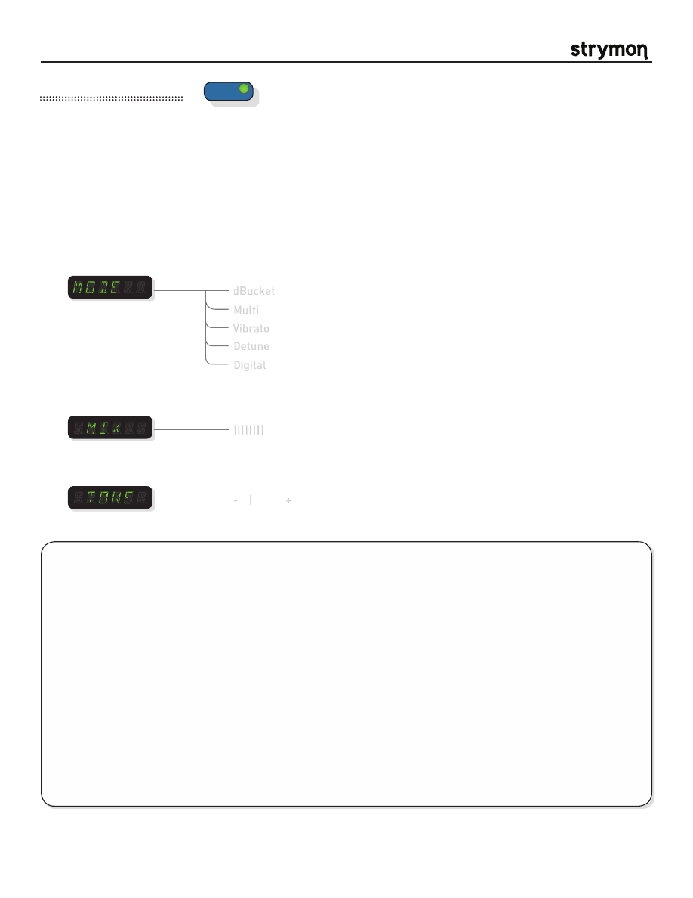

Mobius
-
User Manual
®
pg 8
TYPE
push (bank/BPM)
hold (save)
push (param)
hold (global)
VALUE
PARAM 1
PARAM 2
B
TAP
A
SPEED
DEPTH
LEVEL
BANK DOWN
BANK UP
FILTER
DESTROYER
VIBE
ROTARY
FLANGER
PHASER
CHORUS
FORMANT
AUTOSWELL
VINTAGE TREM
PATTERN TREM
QUADRATURE
®
Mod Machines: Chorus
A full featured Chorus with 5 distinct modes. dBucket, Multi and Vibrato all utilize our dBucket variable clock technology for
classic analog bucket brigade style chorusing. dBucket utilizes a single LFO while Multi utilizes multiple LFOs simultaneously
for a distinctly rich sounding chorus. Vibrato is a pitch modulation effect reminiscent of bucket brigade style pitch modulation
effects. The Detune and Digital modes are clean digital chorus effects reminiscent of the rack effects of the ‘80s. Detune
applys a “thickening” effect to your signal while Digital is a crystal clear chorusing algorithm.
PARAMETERS:
Mode
:
Selects the current Chorus algorithm. Each algorithm is completely unique in its
sonic character.
||||||||
- | +
Mix
:
Sets the Mix of the wet Chorus signal relative to the uneffected dry signal. A 50/50
mix is usually the most typical setting.
Tone
:
Allows adjustment of the brightness of the effected signal.
TIPS & TRICKS:
dBCKET mode
covers the sounds of the classic analog choruses from the 1970’s. Turn the DEPTH Knob to 12:00 and the
MIX parameter at around 80% for the coveted large-box chorus sound. Turn the MIX back to half-way to experience the
sound of the first compact chorus pedal.
MULTI mode’s
three dBucket modulated-delay- lines allow for super-lush modulation at high mix and depth levels
without excessive ‘warble’. If you have a stereo rig, you owe it to yourself to check this out. Try preset 00A for starters.
VIBRTO mode
uses our dBucket and variable-clock technology to capture the warmth of old-school stomp circuits. Set
the MIX param to maximum for pure vibrato. Reduce the MIX to add some dry signal to give a vibrato-influenced chorus.
DETUNE mode
mixes a pitch-detuned signal with the dry input to create a chorus that doesn’t use an LFO. The SPEED
knob controls the pitch shift from -25 cents to +25 cents, while the DEPTH knob adds a widening or doubling effect as it
is turned up for a distinctive ‘80s feel. Set MIX to 50% for the fullest effect.
DIGITL mode
uses a classic modulated digital delay line to produce clean, pristine, unadulterated chorus tones. Set MIX
to 50% for traditional digital chorus sounds.
dBucket
Multi
Vibrato
Detune
Digital